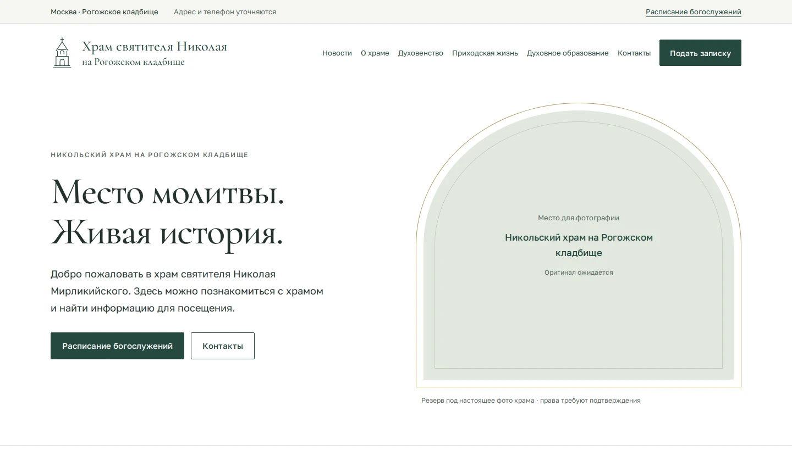
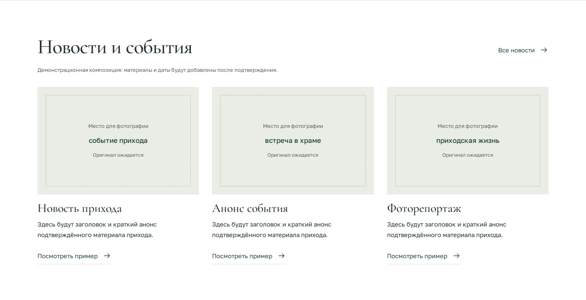
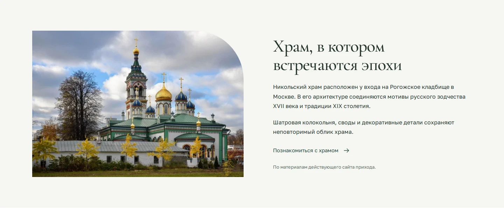
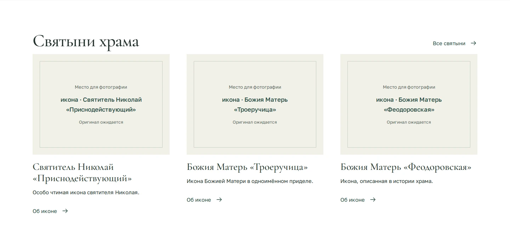
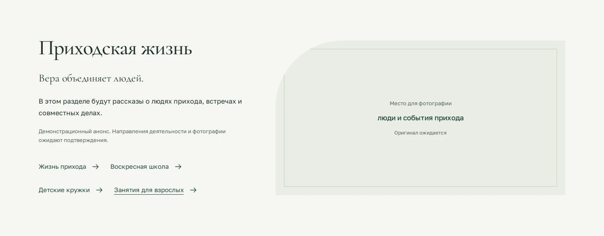
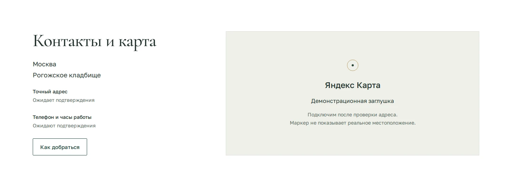
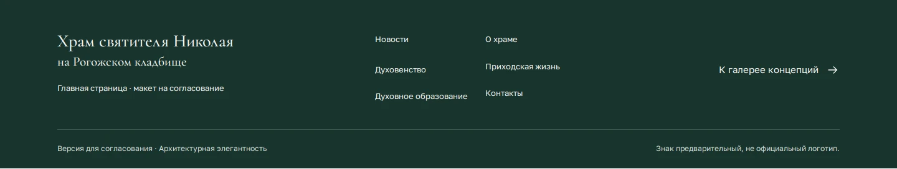

Все экраны выбранного направления в одной последовательности.
Ниже — реальные скриншоты макета. Места для фотографий, новости и часть контактов пока демонстрационные.
Вступление и два быстрых действия: расписание и контакты.

Три публикации с медиа и переходом к архиву.

Краткое знакомство с храмом и его архитектурой.

Три выразительные карточки и переход к каталогу.

Широкий блок о людях и событиях прихода.

Контактные сведения, маршрут и место под Яндекс Карту.

Название храма, повтор навигации, статус макета.
